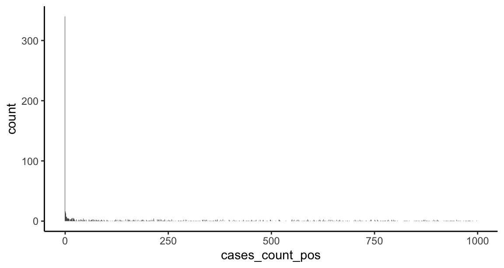
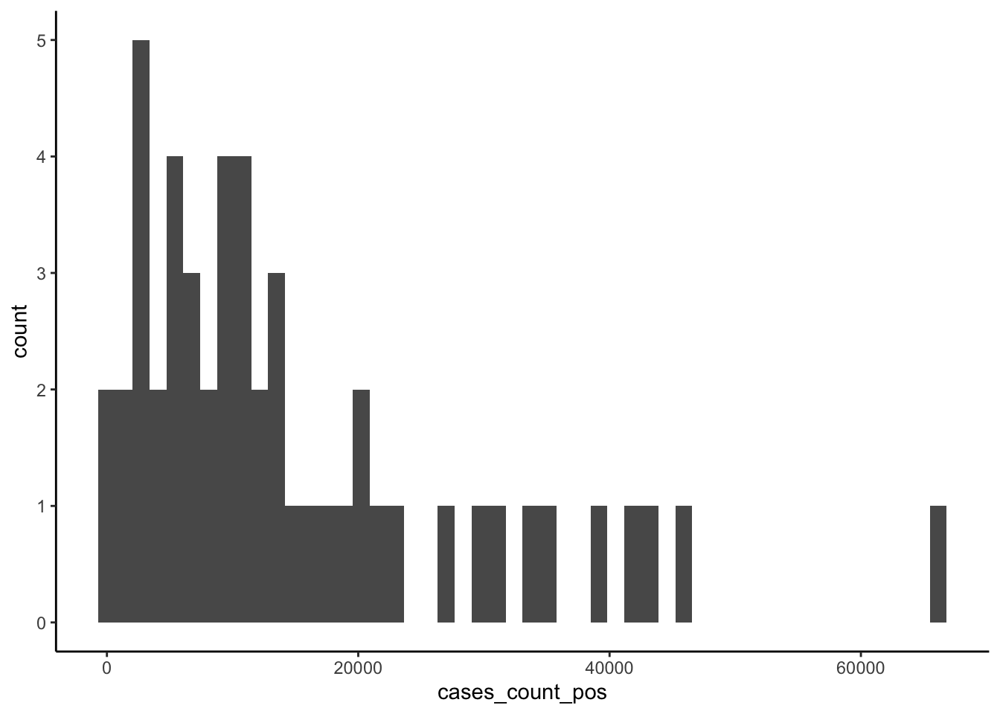
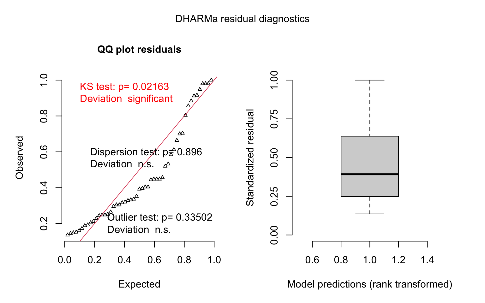
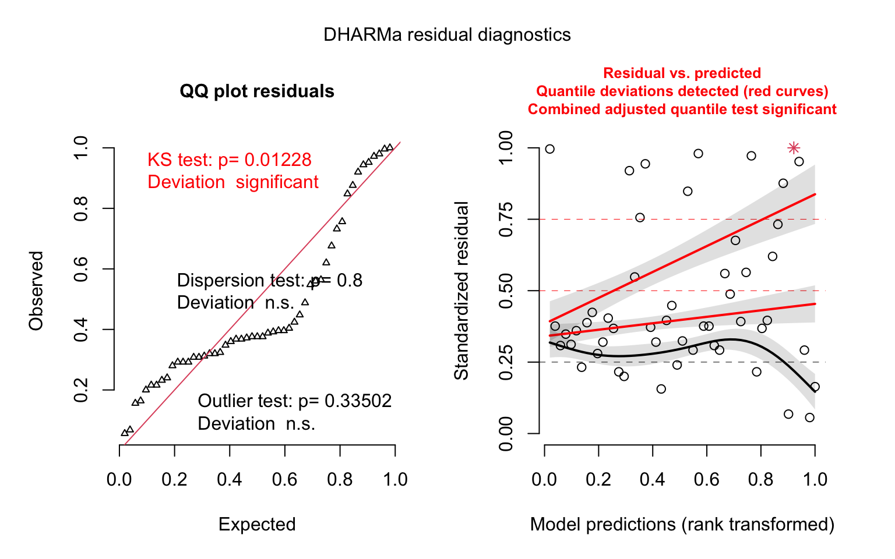
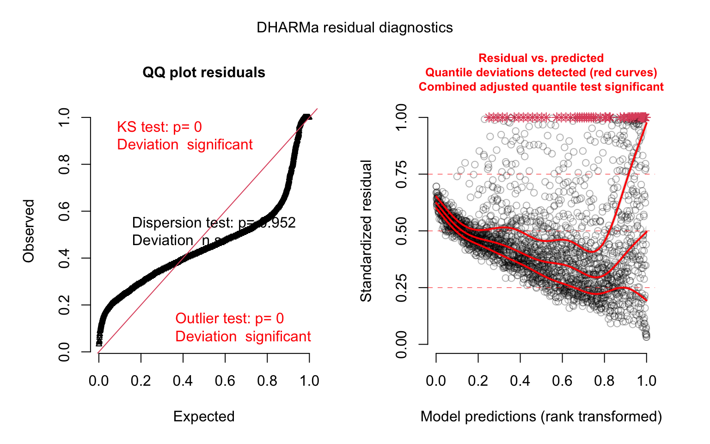
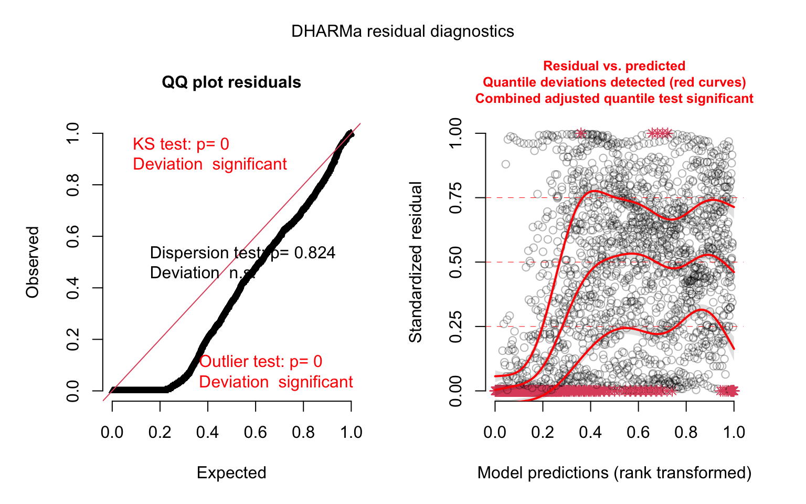
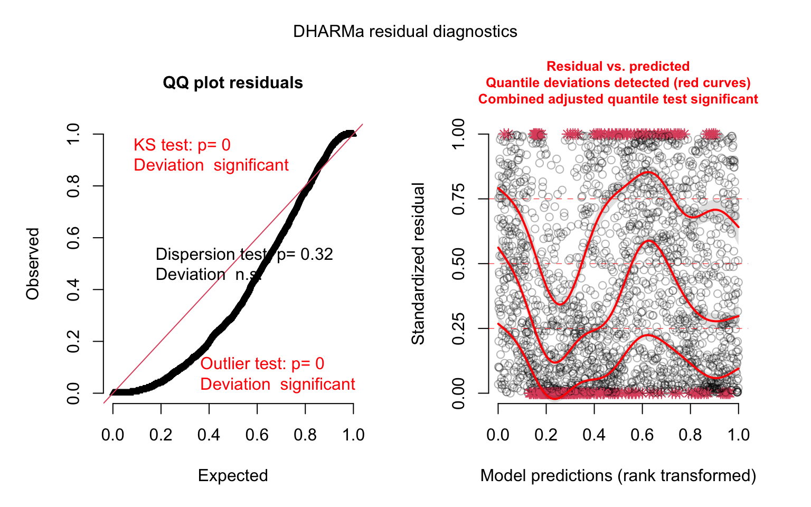
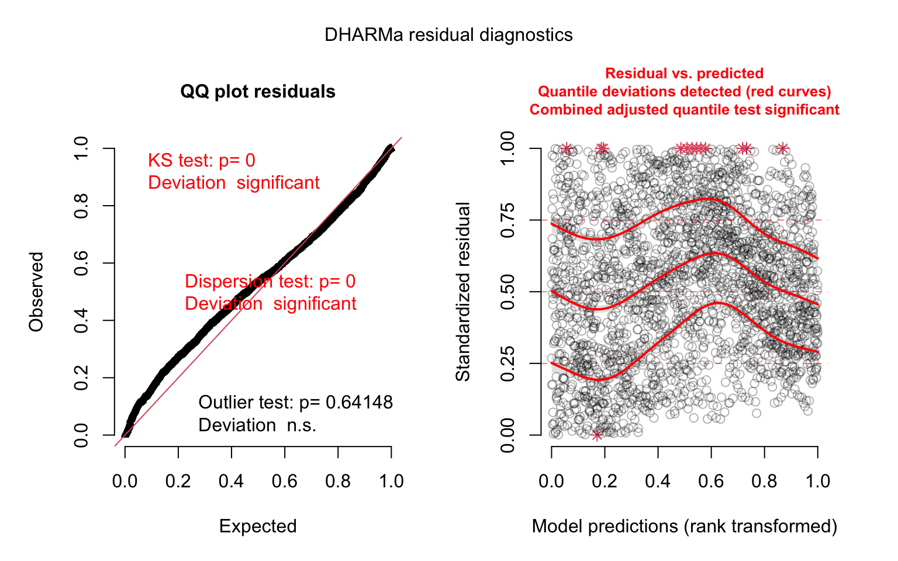
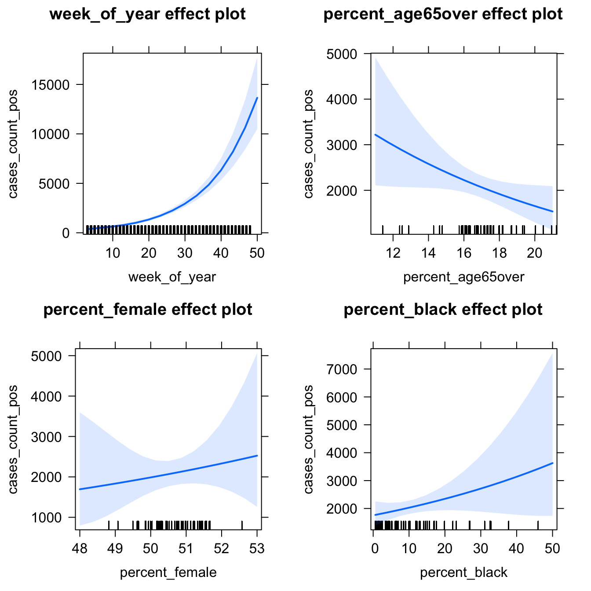

DAY 3: Data analysis (R)
In this section, we will be exploring the relationships between COVID-19 cases and demographic data from the Census Bureau. If you did not complete the optional Census data section, you can still access these data by loading the following file:
## Rows: 2,346
## Columns: 9
## Groups: state [51]
## $ state <chr> "Alabama", "Alabama", "Alabama", "Alabama", "Alabam…
## $ week_of_year <dbl> 3, 4, 5, 6, 7, 8, 9, 10, 11, 12, 13, 14, 15, 16, 17…
## $ pop_count_2019 <dbl> 4903185, 4903185, 4903185, 4903185, 4903185, 490318…
## $ percent_age65over <dbl> 17.33235, 17.33235, 17.33235, 17.33235, 17.33235, 1…
## $ percent_female <dbl> 51.67392, 51.67392, 51.67392, 51.67392, 51.67392, 5…
## $ percent_white <dbl> 69.12641, 69.12641, 69.12641, 69.12641, 69.12641, 6…
## $ percent_black <dbl> 26.78445, 26.78445, 26.78445, 26.78445, 26.78445, 2…
## $ cases_count_pos <dbl> 0, 0, 0, 0, 0, 0, 0, 0, 39, 203, 757, 1198, 1756, 1…
## $ cases_rate_100K <dbl> 0.0000000, 0.0000000, 0.0000000, 0.0000000, 0.00000…Descriptives
It’s always a good idea to start data analysis by looking at some descriptive statistics of the sample data. Here, we can inspect the demographic data we accessed through the Census API:
US_cases_long_demogr_week %>%
group_by(state) %>%
summarize_at(vars(percent_age65over, percent_female,
percent_white, percent_black), .funs = mean) %>%
mutate_if(is.numeric, round, 1)## # A tibble: 51 x 5
## state percent_age65ov… percent_female percent_white percent_black
## <chr> <dbl> <dbl> <dbl> <dbl>
## 1 Alabama 17.3 51.7 69.1 26.8
## 2 Alaska 12.5 47.9 65.3 3.7
## 3 Arizona 18 50.3 82.6 5.2
## 4 Arkansas 17.4 50.9 79 15.7
## 5 California 14.8 50.3 71.9 6.5
## 6 Colorado 14.6 49.6 86.9 4.6
## 7 Connecticut 17.7 51.2 79.7 12.2
## 8 Delaware 19.4 51.7 69.2 23.2
## 9 District of Colu… 12.4 52.6 46 46
## 10 Florida 20.9 51.1 77.3 16.9
## # … with 41 more rowsModeling
The data we have consists of counts of COVID-19 cases over time for each of 50 U.S. states and D.C. These data will be challenging to model, since we will have to deal with the following issues:
The response consists of counts with a huge number of zeros and an extended right tail. Typically, to model counts we’d use a poisson model. Here, the extended right tail suggests the data are overdispersed (i.e., the variance is greater than the mean), which would mean the restrictive assumptions of the poisson distribution are not met and may push us towards a quasi-poisson or negative binomial model. In addition, we may need some machinery in the model to deal with the excess of zeros (a zero-inflation component), since this is atypical for a poisson or negative binomial model. Let’s inspect the response variable:
## Min. 1st Qu. Median Mean 3rd Qu. Max. ## 0.0 175.5 2001.0 5695.7 6093.2 94909.0# marginal response distribution (truncated to counts < 1000) ggplot(US_cases_long_demogr_week %>% filter(cases_count_pos < 1000), aes(x = cases_count_pos)) + geom_histogram(bins = 1e3) + theme_classic()
- The data are inherently spatial in nature — in this case, at the state-level.
The data are inherently temporal in nature — in this case, at the daily- or weekly-level.
Cross-sectional models
Let’s start with something at the simpler end of the scale. We can reduce complexity by initially modeling a single time point (for example, the most recent week of case data), with a subset of states, and just a single predictor — the intercept — to estimate the average number of cases.
# filter the most recent week's data
US_cases_latest_week <- US_cases_long_demogr_week %>%
filter(week_of_year == max(week_of_year))
glimpse(US_cases_latest_week)## Rows: 51
## Columns: 9
## Groups: state [51]
## $ state <chr> "Alabama", "Alaska", "Arizona", "Arkansas", "Califo…
## $ week_of_year <dbl> 48, 48, 48, 48, 48, 48, 48, 48, 48, 48, 48, 48, 48,…
## $ pop_count_2019 <dbl> 4903185, 731545, 7278717, 3017804, 39512223, 575873…
## $ percent_age65over <dbl> 17.33235, 12.51980, 17.97890, 17.35971, 14.77547, 1…
## $ percent_female <dbl> 51.67392, 47.86131, 50.30310, 50.90417, 50.28158, 4…
## $ percent_white <dbl> 69.12641, 65.27117, 82.61679, 79.03953, 71.93910, 8…
## $ percent_black <dbl> 26.7844473, 3.7055820, 5.1794430, 15.6752393, 6.460…
## $ cases_count_pos <dbl> 10364, 3188, 18052, 7935, 66491, 22175, 5301, 2587,…
## $ cases_rate_100K <dbl> 211.37281, 435.79001, 248.01074, 262.93954, 168.279…Now let’s inspect the response variable for just this last week of data:
# histogram of last week's counts
ggplot(US_cases_latest_week, aes(x = cases_count_pos)) +
geom_histogram(bins = 50) +
theme_classic()
## Min. 1st Qu. Median Mean 3rd Qu. Max.
## 338 5106 10364 15163 20009 66491Usually with count data, we’d fit a model designed to deal with the idiosyncrasies of counts — which are integer-only, lower bounded at zero, and generally heavily right skewed — such as a poisson, quasi-poisson, or negative binomial model. Here, however, the average number of counts is high and we don’t have any observations near the theoretical lower boundary of zero, so we can try a basic linear model since in this situation the Gaussian family of distributions approximates the poisson.
# fit intercept-only OLS model
model_last_week1 <- lm(cases_count_pos ~ 1,
data = US_cases_latest_week)
# inference
summary(model_last_week1)##
## Call:
## lm(formula = cases_count_pos ~ 1, data = US_cases_latest_week)
##
## Residuals:
## Min 1Q Median 3Q Max
## -14825 -10058 -4799 4846 51328
##
## Coefficients:
## Estimate Std. Error t value Pr(>|t|)
## (Intercept) 15163 1981 7.655 0.00000000057 ***
## ---
## Signif. codes: 0 '***' 0.001 '**' 0.01 '*' 0.05 '.' 0.1 ' ' 1
##
## Residual standard error: 14150 on 50 degrees of freedom## 2.5 % 97.5 %
## (Intercept) 11184.68 19141.6# model diagnostics - simulate residuals using the DHARMa package
model_last_week1_simres <- simulateResiduals(model_last_week1)
plot(model_last_week1_simres, quantreg = TRUE)
We recovered the average number of cases for the latest week, pooled over all the states. Now we can try adding some of our explanatory variables.
# fit OLS model
model_last_week2 <- lm(cases_count_pos ~ 1 + percent_age65over + percent_female + percent_black,
data = US_cases_latest_week)
# inference
summary(model_last_week2)##
## Call:
## lm(formula = cases_count_pos ~ 1 + percent_age65over + percent_female +
## percent_black, data = US_cases_latest_week)
##
## Residuals:
## Min 1Q Median 3Q Max
## -23275 -7096 -4382 3385 46178
##
## Coefficients:
## Estimate Std. Error t value Pr(>|t|)
## (Intercept) -312043.4 204588.9 -1.525 0.1339
## percent_age65over -2358.0 1242.6 -1.898 0.0639 .
## percent_female 7363.1 4334.8 1.699 0.0960 .
## percent_black -469.0 341.1 -1.375 0.1756
## ---
## Signif. codes: 0 '***' 0.001 '**' 0.01 '*' 0.05 '.' 0.1 ' ' 1
##
## Residual standard error: 13970 on 47 degrees of freedom
## Multiple R-squared: 0.08298, Adjusted R-squared: 0.02445
## F-statistic: 1.418 on 3 and 47 DF, p-value: 0.2494# model diagnostics - simulate residuals using the DHARMa package
model_last_week2_simres <- simulateResiduals(model_last_week2)
plot(model_last_week2_simres, quantreg = TRUE)
We’re not able to detect any effects of interest here — perhaps because we’re only using one week of data. We actually have a year’s worth of data, so let’s try modeling this as a panel (a longitudinal dataset).
Panel models
We have case count data for each state, tracked at the weekly-level for a year. This means that the data are clustered at the state-level (i.e., observations within states are likely to be correlated with one another more than observations between different states). We could deal with this clustering in several different ways, but using a multi-level model with random intercepts grouped by state is a good, flexible option. Let’s start with a linear model.
model_panel1 <- glmmTMB(cases_count_pos ~ 1 + week_of_year + percent_age65over +
percent_female + percent_black + (1 | state),
family = gaussian(link = "identity"),
data = US_cases_long_demogr_week)
# inference
summary(model_panel1)## Family: gaussian ( identity )
## Formula:
## cases_count_pos ~ 1 + week_of_year + percent_age65over + percent_female +
## percent_black + (1 | state)
## Data: US_cases_long_demogr_week
##
## AIC BIC logLik deviance df.resid
## NA NA NA NA 2339
##
## Random effects:
##
## Conditional model:
## Groups Name Variance Std.Dev.
## state (Intercept) 0.002297 0.04793
## Residual 91426064.955941 9561.69781
## Number of obs: 2346, groups: state, 51
##
## Dispersion estimate for gaussian family (sigma^2): 9.14e+07
##
## Conditional model:
## Estimate Std. Error z value Pr(>|z|)
## (Intercept) 2.023 20906.193 0.000 1.000
## week_of_year 327.253 14.870 22.008 < 0.0000000000000002 ***
## percent_age65over -597.360 125.788 -4.749 0.00000204 ***
## percent_female 135.539 442.844 0.306 0.760
## percent_black 49.035 34.700 1.413 0.158
## ---
## Signif. codes: 0 '***' 0.001 '**' 0.01 '*' 0.05 '.' 0.1 ' ' 1# model diagnostics - simulate residuals using the DHARMa package
model_panel1_simres <- simulateResiduals(model_panel1)
par(mfrow = c(1, 1))
plot(model_panel1_simres, quantreg = TRUE)
Aside from the convergence warning, the model diagnostics look terrible here — why do you think that is? Now that we have a full year’s worth of data, for many states the earlier part of that year consisted of a very small number of cases — often zero cases.
## Min. 1st Qu. Median Mean 3rd Qu. Max.
## 0.0 175.5 2001.0 5695.7 6093.2 94909.0##
## FALSE TRUE
## 2006 340About 15% of the data are zeros. This makes the linear model a poor fit for these data. Let’s try a model designed specifically for count data:
model_panel2 <- glmmTMB(cases_count_pos ~ 1 + week_of_year + percent_age65over +
percent_female + percent_black + (1 | state),
family = poisson(link = "log"),
data = US_cases_long_demogr_week)
# inference
summary(model_panel2)## Family: poisson ( log )
## Formula:
## cases_count_pos ~ 1 + week_of_year + percent_age65over + percent_female +
## percent_black + (1 | state)
## Data: US_cases_long_demogr_week
##
## AIC BIC logLik deviance df.resid
## 6970899 6970934 -3485444 6970887 2340
##
## Random effects:
##
## Conditional model:
## Groups Name Variance Std.Dev.
## state (Intercept) 1.189 1.091
## Number of obs: 2346, groups: state, 51
##
## Conditional model:
## Estimate Std. Error z value Pr(>|z|)
## (Intercept) -13.37143428 15.97031012 -0.8 0.4024
## week_of_year 0.06607058 0.00002526 2615.3 <0.0000000000000002 ***
## percent_age65over -0.22649142 0.09699394 -2.3 0.0195 *
## percent_female 0.46168234 0.33838023 1.4 0.1724
## percent_black -0.00887897 0.02662506 -0.3 0.7388
## ---
## Signif. codes: 0 '***' 0.001 '**' 0.01 '*' 0.05 '.' 0.1 ' ' 1# model diagnostics - simulate residuals using the DHARMa package
model_panel2_simres <- simulateResiduals(model_panel2)
plot(model_panel2_simres, quantreg = TRUE)
This looks better. But there are several issues we’re not yet dealing with. Chief among these are: 1) the fact that states have different population levels, but our model is unaware of this, and 2) we have a huge number of zeros in the data, which poisson models are ill-equipped to handle. Let’s fit a more sophisticated model that can account for these issues. We can include an exposure term using the offset() function to get counts per population unit, as well as a separate binomial model to account for the excess of zeros (the zero-inflation component):
model_panel3 <- glmmTMB(cases_count_pos ~ 1 + offset(log(pop_count_2019)) + week_of_year +
percent_age65over + percent_female + percent_black +
(1 | state),
family = poisson(link = "log"),
ziformula = ~ week_of_year,
data = US_cases_long_demogr_week)
# inference
summary(model_panel3)## Family: poisson ( log )
## Formula:
## cases_count_pos ~ 1 + offset(log(pop_count_2019)) + week_of_year +
## percent_age65over + percent_female + percent_black + (1 | state)
## Zero inflation: ~week_of_year
## Data: US_cases_long_demogr_week
##
## AIC BIC logLik deviance df.resid
## 6243994 6244040 -3121989 6243978 2338
##
## Random effects:
##
## Conditional model:
## Groups Name Variance Std.Dev.
## state (Intercept) 0.2104 0.4587
## Number of obs: 2346, groups: state, 51
##
## Conditional model:
## Estimate Std. Error z value Pr(>|z|)
## (Intercept) 7.25747164 6.71704524 1.1 0.2799
## week_of_year 0.05878122 0.00002682 2191.4 <0.0000000000000002 ***
## percent_age65over -0.04876803 0.04079522 -1.2 0.2319
## percent_female -0.30602496 0.14232092 -2.2 0.0315 *
## percent_black 0.01955739 0.01119827 1.7 0.0807 .
## ---
## Signif. codes: 0 '***' 0.001 '**' 0.01 '*' 0.05 '.' 0.1 ' ' 1
##
## Zero-inflation model:
## Estimate Std. Error z value Pr(>|z|)
## (Intercept) 10.51867 0.88767 11.85 <0.0000000000000002 ***
## week_of_year -1.14758 0.09542 -12.03 <0.0000000000000002 ***
## ---
## Signif. codes: 0 '***' 0.001 '**' 0.01 '*' 0.05 '.' 0.1 ' ' 1# model diagnostics - simulate residuals using the DHARMa package
model_panel3_simres <- simulateResiduals(model_panel3)
plot(model_panel3_simres, quantreg = TRUE)
This is looking better. Let’s compare our last two models:
# use likelihood ratio test to compare models with and without
# population exposure and zero-inflation component
anova(model_panel2, model_panel3)## Data: US_cases_long_demogr_week
## Models:
## model_panel2: cases_count_pos ~ 1 + week_of_year + percent_age65over + percent_female + , zi=~0, disp=~1
## model_panel2: percent_black + (1 | state), zi=~week_of_year, disp=~1
## model_panel3: cases_count_pos ~ 1 + offset(log(pop_count_2019)) + week_of_year + , zi=~0, disp=~1
## model_panel3: percent_age65over + percent_female + percent_black + (1 | , zi=~week_of_year, disp=~1
## model_panel3: state), zi=~0, disp=~1
## Df AIC BIC logLik deviance Chisq Chi Df
## model_panel2 6 6970899 6970934 -3485444 6970887
## model_panel3 8 6243994 6244040 -3121989 6243978 726909 2
## Pr(>Chisq)
## model_panel2
## model_panel3 < 0.00000000000000022 ***
## ---
## Signif. codes: 0 '***' 0.001 '**' 0.01 '*' 0.05 '.' 0.1 ' ' 1Our model_panel3 does a much better job of capturing the idiosyncrasies of our data. We can go further, however. The data may not meet the restrictive assumptions of the poisson model (that the variance is equal to the mean), in which case one option is to fit a negative binomial model that can account for this over- or under-dispersion. We can also include a more flexible random effects structure, to allow each state to have different case count trajectories over time:
model_panel4 <- glmmTMB(cases_count_pos ~ 1 + offset(log(pop_count_2019)) + week_of_year +
percent_age65over + percent_female + percent_black +
(1 + week_of_year | state),
family = nbinom2(link = "log"),
ziformula = ~ week_of_year,
data = US_cases_long_demogr_week)
# inference
summary(model_panel4) ## Family: nbinom2 ( log )
## Formula:
## cases_count_pos ~ 1 + offset(log(pop_count_2019)) + week_of_year +
## percent_age65over + percent_female + percent_black + (1 +
## week_of_year | state)
## Zero inflation: ~week_of_year
## Data: US_cases_long_demogr_week
##
## AIC BIC logLik deviance df.resid
## 36194.6 36257.9 -18086.3 36172.6 2335
##
## Random effects:
##
## Conditional model:
## Groups Name Variance Std.Dev. Corr
## state (Intercept) 1.043021 1.02128
## week_of_year 0.001259 0.03549 -0.93
## Number of obs: 2346, groups: state, 51
##
## Overdispersion parameter for nbinom2 family (): 1.4
##
## Conditional model:
## Estimate Std. Error z value Pr(>|z|)
## (Intercept) -12.450500 7.002154 -1.778 0.0754 .
## week_of_year 0.076687 0.005287 14.505 <0.0000000000000002 ***
## percent_age65over -0.073991 0.035469 -2.086 0.0370 *
## percent_female 0.079872 0.146119 0.547 0.5846
## percent_black 0.014524 0.009735 1.492 0.1357
## ---
## Signif. codes: 0 '***' 0.001 '**' 0.01 '*' 0.05 '.' 0.1 ' ' 1
##
## Zero-inflation model:
## Estimate Std. Error z value Pr(>|z|)
## (Intercept) 10.51630 0.88862 11.83 <0.0000000000000002 ***
## week_of_year -1.14789 0.09557 -12.01 <0.0000000000000002 ***
## ---
## Signif. codes: 0 '***' 0.001 '**' 0.01 '*' 0.05 '.' 0.1 ' ' 1# model diagnostics - simulate residuals using the DHARMa package
model_panel4_simres <- simulateResiduals(model_panel4)
plot(model_panel4_simres, quantreg = TRUE)
This looks like our best model yet. We can’t compare our previous poisson model and this negative binomial model directly, but we can update our model_panel3 model to use the negative binomial distribution, so that we can determine whether the random slope for time improve the model fit:
# update poisson model to use negative binomial family
model_panel3 <- update(model_panel3, family = nbinom2)
# use likelihood ratio test to compare model with and without random slopes for time
anova(model_panel3, model_panel4)## Data: US_cases_long_demogr_week
## Models:
## model_panel3: cases_count_pos ~ 1 + offset(log(pop_count_2019)) + week_of_year + , zi=~week_of_year, disp=~1
## model_panel3: percent_age65over + percent_female + percent_black + (1 | , zi=~week_of_year, disp=~1
## model_panel3: state), zi=~week_of_year, disp=~1
## model_panel4: cases_count_pos ~ 1 + offset(log(pop_count_2019)) + week_of_year + , zi=~week_of_year, disp=~1
## model_panel4: percent_age65over + percent_female + percent_black + (1 + , zi=~week_of_year, disp=~1
## model_panel4: week_of_year | state), zi=~week_of_year, disp=~1
## Df AIC BIC logLik deviance Chisq Chi Df Pr(>Chisq)
## model_panel3 9 36484 36536 -18233 36466
## model_panel4 11 36195 36258 -18086 36173 293.69 2 < 0.00000000000000022
##
## model_panel3
## model_panel4 ***
## ---
## Signif. codes: 0 '***' 0.001 '**' 0.01 '*' 0.05 '.' 0.1 ' ' 1The random slope is a useful addition. Let’s look at some visualizations of the effects from the model:
# plot marginal effects for all explanatory variables
eff_panel4 <- allEffects(model_panel4)
plot(eff_panel4, type = "response")
So far, we’ve only been modeling a linear trend for time. From our visualizations we know that this is unrealistic. How could we incorporate non-linear time elements in the model (e.g., splines, polynomials)?
In addition, we haven’t accounted for autocorrelation in the case rates over time, which is something we might expect given that COVID-19 cases tend to manifest in waves over time. One possible modeling strategy here would be to use generalized estimating equations (GEE), which can incorporate autoregressive terms even for count-based (poisson) models. The GEEs can be solved using the package geepack, which may be an excellent next step to explore.